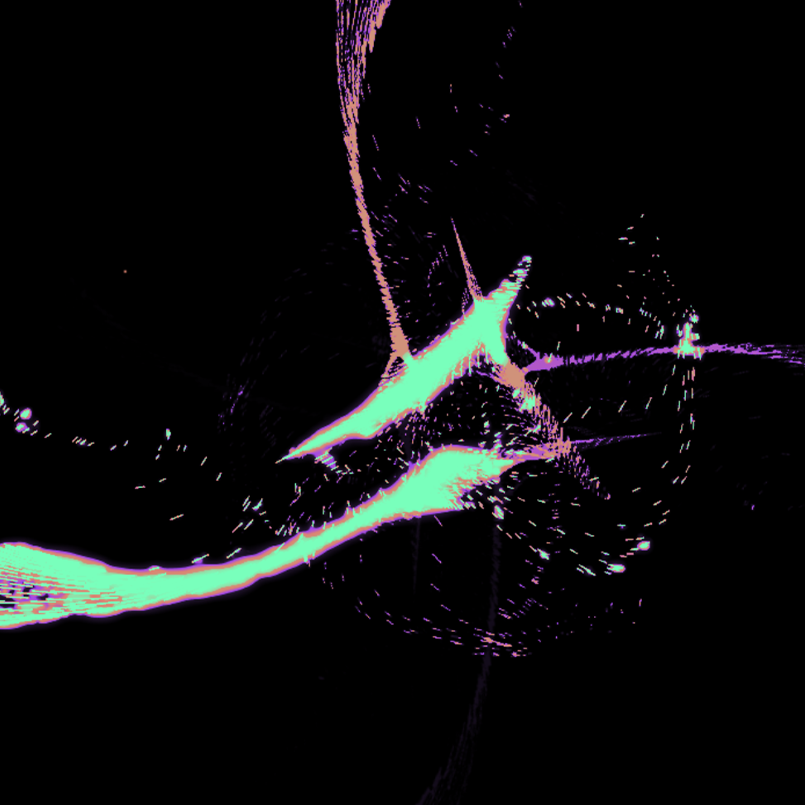
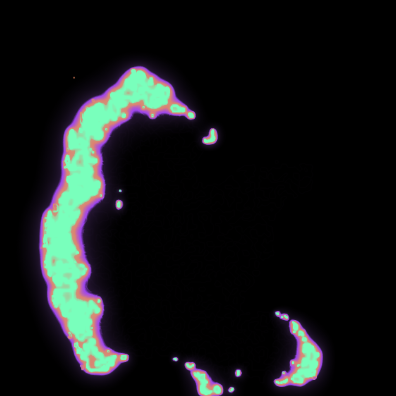
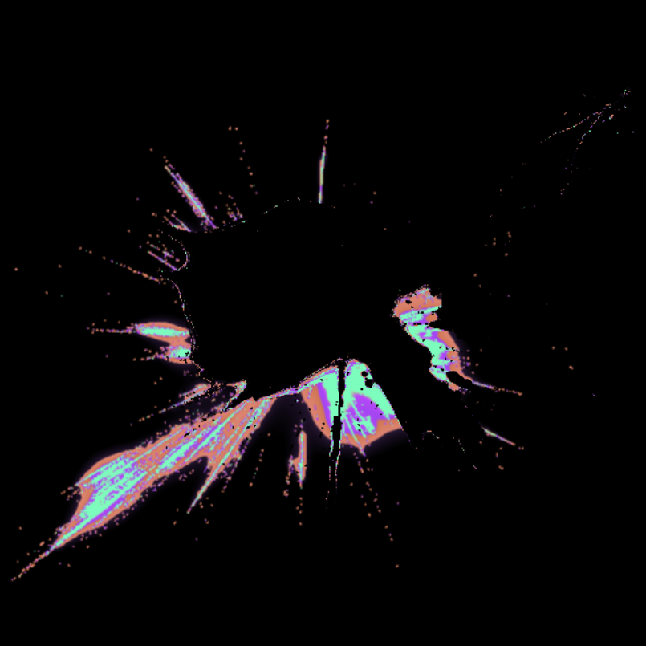
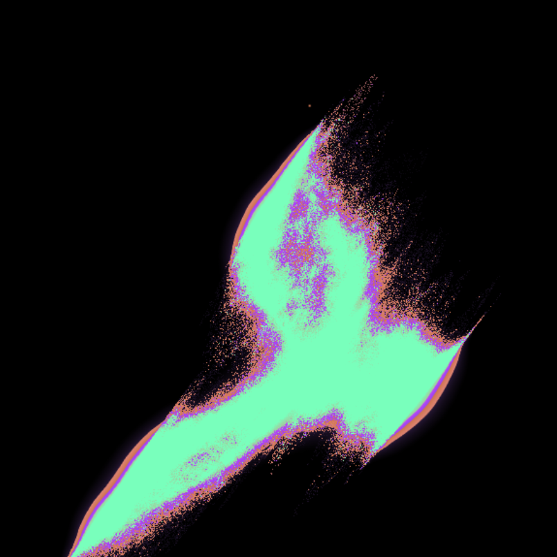
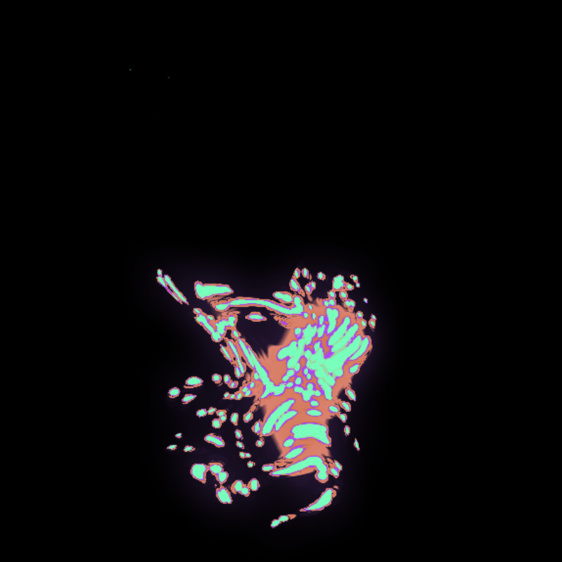
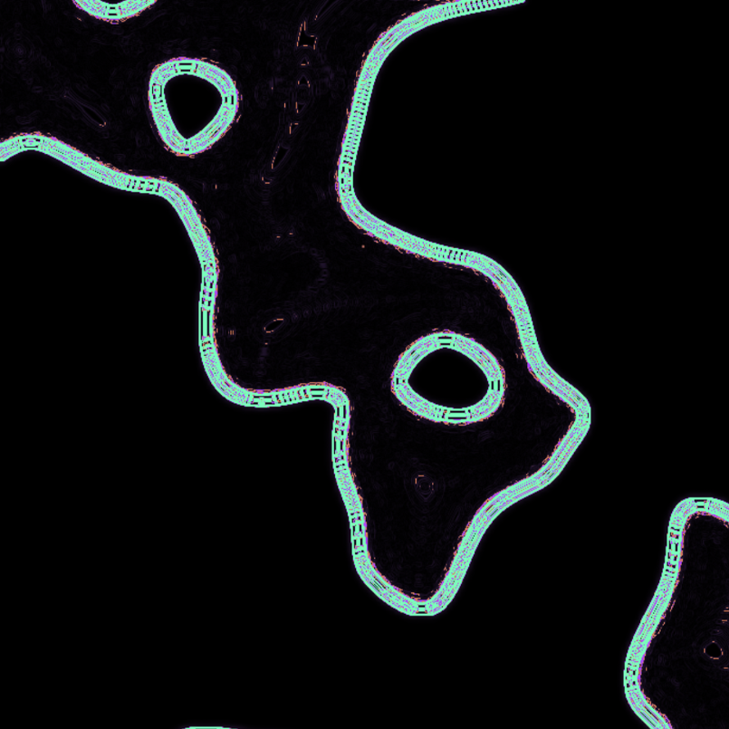
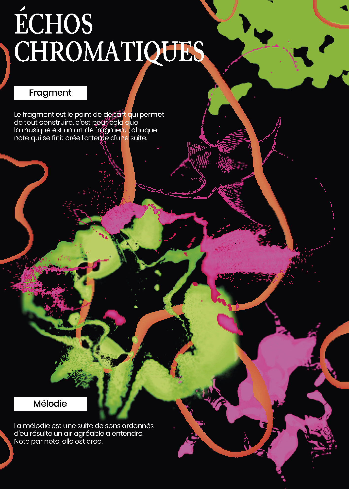
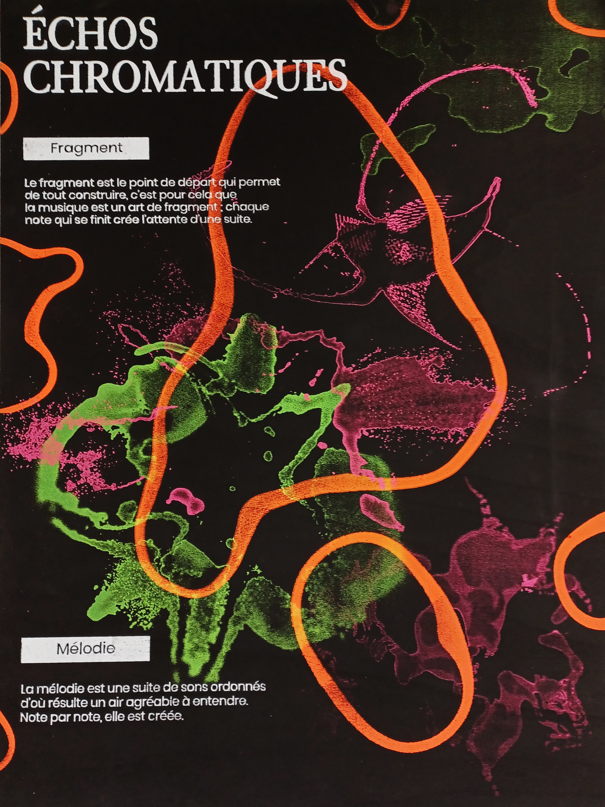

This project is a partenship with Cité des Sciences et de l'Industrie in Paris (CSI) around musical notions. It is installed in the library of the CSI.
This installation uses a piano connected via MIDI to a screen, transforming piano playing into an immersive visual experience. The goal is to make visible what is usually invisible. The installation is accompanied by a series of seven educational panels that explain the musical and graphic principles at work, while extending the visual aesthetic of the installation.
More specifically, regarding our work named Chromatic Echoes, which focuses on motif and melody, each note played creates a colored shape evolving in real time. For the sake of clarity, we limited ourselves to six shapes, which we called motifs, that intertwine with one another, creating a graphic painting resembling a melody.
The final poster was screen painted on a wood panel, with a blackbackground, also painted.
Softwares : Photoshop, TouchDesigner
Motif






Web poster & screen painted poster

